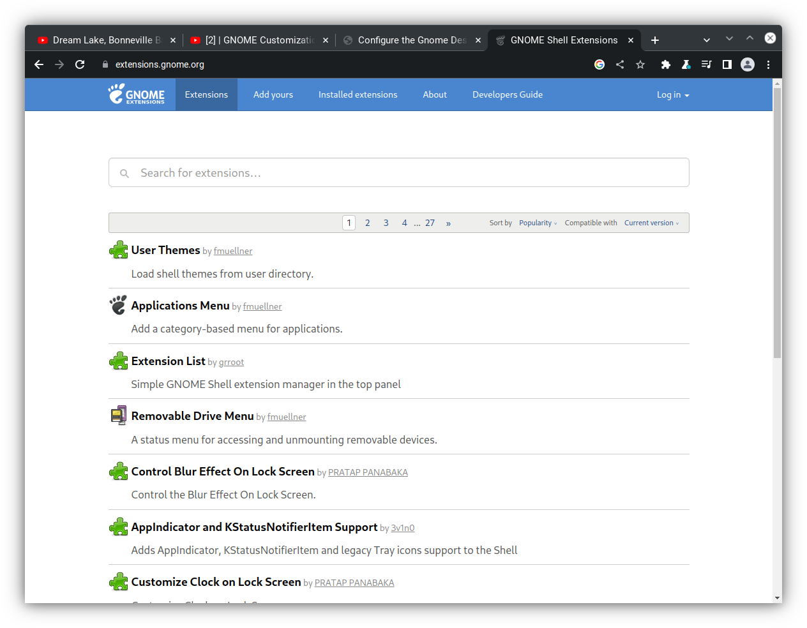

Configure the Gnome Desktop
If you have made it this far I am assuming that you have succesfully installed PopOS or you have installed some other flavor of linux. I am also assuming that you have downloaded the Gnome Desktop Environment and can log into your Desktop. If this is the case, lets get to work configuring our Desktop Environment.
Note
System76, the company the developed and maintains PopOS has modified the traditional Gnome desktop into one they call Cosmic. It is very similar to Gnome, but it has slight differences.
Update Firmware
As soon as PopOS is installed you will need to make any necessary updates to
the distribution that has occurred since installed. Click on the PopShop
icon and then click the three horizontal lines that exists on the upper
right corner of the PopShop window. next click on the icon for
Updates & Installed Software. This will bring up a list of necessary
update to include Operating System and Firmware icons.
Note: NVIDIA as of late has not done a good job testing their drivers. This has sometimes led to problems in the firmware update. If this is the case, please follow these instructions.
Change Wallpaper
At this point if you have an image you want to use as a your wallpaper
background, you can install or download the image on your computer. Historically
on gnome you would need to go the the Appearance option within the settings menu;
however on the Cosmic desktop environment, this option does not exist, and you
merely need to right click on the piture you wish to use as a desktop background.
It will offer you an option to set the image as the preferred background. Once
you click set as wallpaper, the image will now be your background.
Install Desktop Software
Before we proceed to the installation and configuration of software, lets take a moment to configure our desktop.
Install Chrome
First lets install
Google Chrome.
Navigate to the Google Chrome
website and click Download Chrome button. Click the option for Debian/Ubuntu.
This will download the installer the the Downloads directory. Next, open
the terminal and complete the following instructions.
cd ~/Downloads
ls
This should list the following file or something similar.
google-chrome-stable_current_amd64.deb
If the file has a different name, then replace the name used in this example with the correct name. Execute the following commands to install Google Chrome and then delete the installer.
sudo apt update
sudo apt install ./google-chrome-stable_current_amd64.deb
rm ./google-chrome-stable_current_amd64.deb
Now Google Chrome should be in the list of available applications on your computer.
Install Vivaldi
Vivaldi is a powerful web browser that offers a unique
way to access browser tabs that are unique to different work flows. Vivaldi can
be downloaded from the PopShop. Just open the PopShop and type Vivaldi.
Install Nerd Fonts
First we need to create a directory where fonts can be stored.
mkdir -p ~/.fonts/
Open a web browser and navigate to the Nerd Fonts
website. The website will display several nerd font options that can be downloaded
by clicking the download button. Each font will be downloaded to the Downloads
directory. Once a font is downloaded, it can be installed and the installer can
deleted with the following commands. In this instance, the UbuntuMono font is
being installed.
filename=UbuntuMono.zip
extension="${filename##*.}"
filename="${filename%.*}"
mkdir ${filename} && pushd ${filename}
unzip ../${filename}.${extension}
popd
mv ${filename} ~/.fonts/
fc-cache -fc
The above command can be repeated for each font that you wish to install, but you should replace the name assigned to filename. After each installation delete the file from the Downloads directory.
Modify Gnome Extras
Gnome Extras comes pre-installed with the PopOS Cosmic desktop environment. We can add functionality to our Desktop Environment by navigating to the Gnome Extensions website. The Gnome Extensions web site should look like the image below.
Each item in the Extensions site can be clicked on, which opens up another
window with a slider button that can be used to turn the option on or off.
The slider button should look like this example from the Extension List
extra option.

If turned on, the functionality will be displayed in the Extensions
application. I personally user the Shortcuts,
Tactile, Tiling Assistant and Tiling Shell extensions. However, each user should
browse the options to see what extensions are right for you. The image below
shows somthing similar to what you might see in your Extensions Application.
You can also further tailor your gnome desktop experience with Gnome Tweaks.
sudo apt update
Verfiy that the repsitory is enabled
sudo add-apt-repository univers
If it is available, install Gnome Tweaks
sudo apt install gnome-tweaks
Install Goole Earth
Navigate to the Google Earth web site. Find the button to download the installer and click. This will download the installer to the Downloads directory. Follow the instructions below in the terminal.
sudo apt update
sudo apt install ~/Downloads/google-earth-pro-stable_current_amd64.deb
rm ~/Downloads/google-earth-pro-stable_current_amd64